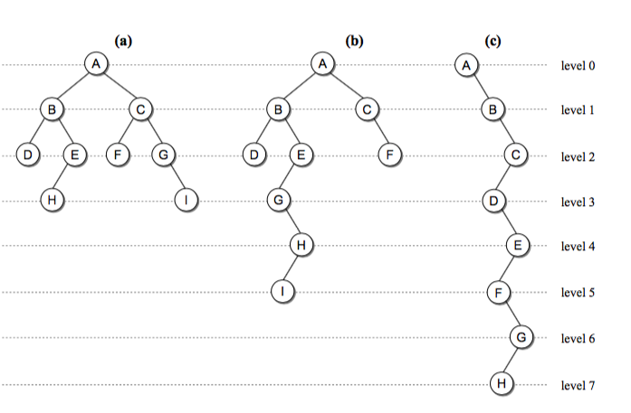
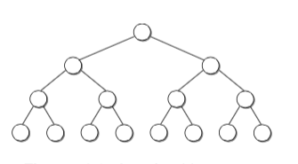

算法与数据结构原理及Python实现
算法与数据结构原理及Python实现之十七：树与二叉树
17. 树与二叉树
接下俩讲讲树；讲完了树之后我们开始介绍一种有用的数据结构堆(heap)， 以及借助堆来实现的堆排序。
树：
树结构是一种包括节点(nodes)和边(edges)的拥有层级关系的一种结构。
一些概念：
- 根节点(root): 树的最上层的节点，任何非空的树都有一个节点
- 路径(path): 从起始节点到终止节点经历过的边
- 父亲(parent)：除了根节点，每个节点的上一层边连接的节点就是它的父亲(节点)
- 孩子(children): 每个节点由边指向的下一层节点
- 兄弟(siblings): 同一个父亲并且处在同一层的节点
- 子树(subtree): 每个节点包含它所有的后代组成的子树
- 叶子节点(leaf node): 没有孩子的节点成为叶子节点
二叉树：
了解完树的结构以后，我们来看树结构里一种简单但是却比较常用的树-二叉树。
二叉树是一种简单的树，它的每个节点最多只能包含两个孩子，以下都是一些合法的二叉树:


通过上边这幅图再来看几个二叉树相关的概念:
- 节点深度(depth): 节点对应的 level 数字
- 树的高度(height): 二叉树的高度就是 level 数 + 1，因为 level 从 0开始计算的
- 树的宽度(width): 二叉树的宽度指的是包含最多节点的层级的节点数
- 树的 size：二叉树的节点总个数。
一棵 size 为 n 的二叉树高度最多可以是 n，最小的高度是 ，这里 log 以 2 为底简写为 lgn。
一些特殊的二叉树：
- 满二叉树(full binary tree)
如果每个内部节点（非叶节点）都包含两个孩子，就成为满二叉树。下边是一些例子，它可以有多种形状：
- 完美二叉树(perfect binary tree)
当所有的叶子节点都在同一层就是完美二叉树，毫无间隙填充了 h 层。

- 完全二叉树(complete binary tree)
当一个高度为 h 的完美二叉树减少到 h-1，并且最底层的槽被毫无间隙地从左到右填充，我们就叫它完全二叉树。下图就是完全二叉树的例子：

二叉树的表示：
说了那么多，那么怎么表示一棵二叉树呢？其实你发现会和链表有一些相似之处，一个节点，然后节点需要保存孩子的指针，我以构造下边这个二叉树为例子：

我们先定义一个类表示节点：
# 定义二叉树节点类 class BinTreeNode(object): def __init__(self, data, left=None, right=None): self.data, self.left, self.right = data, left, right
当然和链表类似，root 节点是我们的入口，于是乎定义一个 二叉树：
# 定义二叉树类 class BinTree(object): def __init__(self, root=None): self.root = root # 将 root 初始化为空
怎么构造上图中的二叉树呢，似乎其他课本没找到啥例子(有些例子是写了一堆嵌套节点来定义，很难搞清楚层次关系)，我自己定义了一种方法，首先我们输入节点信息，仔细看下边代码，叶子节点的 left 和 right 都是 None，并且只有一个根节点 A:(该部分主要作为理解使用)
node_list = [ {'data': 'A', 'left': 'B', 'right': 'C', 'is_root': True}, {'data': 'B', 'left': 'D', 'right': 'E', 'is_root': False}, {'data': 'D', 'left': None, 'right': None, 'is_root': False}, {'data': 'E', 'left': 'H', 'right': None, 'is_root': False}, {'data': 'H', 'left': None, 'right': None, 'is_root': False}, {'data': 'C', 'left': 'F', 'right': 'G', 'is_root': False}, {'data': 'F', 'left': None, 'right': None, 'is_root': False}, {'data': 'G', 'left': 'I', 'right': 'J', 'is_root': False}, {'data': 'I', 'left': None, 'right': None, 'is_root': False}, {'data': 'J', 'left': None, 'right': None, 'is_root': False}, ]
然后我们给 BinTreeNode 定义一个 build_from 方法，当然你也可以定义一种自己的构造方法：
# 定义二叉树类 class BinTree(object): def __init__(self, root=None): self.root = root # 将 root 初始化为空 # 这个函数在理解的时候可能会比较乱，建议是自己在纸上画一下每个变量的指向理解下；他定义的变量的名称也不是很好 @classmethod def build_from(cls, node_list): """通过节点信息构造二叉树 第一次遍历我们构造 node 节点 第二次遍历我们给 root 和 孩子赋值 最后我们用 root 初始化这个类并返回一个对象 :param node_list: {'data': 'A', 'left': None, 'right': None, 'is_root': False} """ node_dict = {} # 定义一个空字典，用来存储二叉树 for node_data in node_list: data = node_data['data'] node_dict[data] = BinTreeNode(data) for node_data in node_list: data = node_data['data'] node = node_dict[data] if node_data['is_root']: root = node node.left = node_dict.get(node_data['left']) node.right = node_dict.get(node_data['right']) return cls(root) btree = BinTree.build_from(node_list)
大功告成，这样我们就构造了一棵二叉树对象。下边我们看看它的一些常用操作。
二叉树的遍历：
不知道你有没有发现，二叉树其实是一种递归结构，因为单独拿出来一个 subtree 子树出来，其实它还是一棵树。那遍历它就很方便啦，我们可以直接用递归的方式来遍历它。但是当处理顺序不同的时候，树又分为三种遍历方式:
- 先(根)序遍历: 先处理根，之后是左子树，然后是右子树
- 中(根)序遍历: 先处理左子树，之后是根，最后是右子树
- 后(根)序遍历: 先处理左子树，之后是右子树，最后是根
我们来看下实现，其实算是比较直白的递归函数:
from collections import deque class Queue(object): # 借助内置的 deque 我们可以迅速实现一个 Queue def __init__(self): self._items = deque() def append(self, value): return self._items.append(value) def pop(self): return self._items.popleft() def empty(self): return len(self._items) == 0 class Stack(object): def __init__(self): self._items = deque() def push(self, value): return self._items.append(value) def pop(self): return self._items.pop() def empty(self): return len(self._items) == 0 # 定义二叉树节点类 class BinTreeNode(object): def __init__(self, data, left=None, right=None): self.data, self.left, self.right = data, left, right # 定义二叉树类 class BinTree(object): def __init__(self, root=None): self.root = root # 将 root 初始化为空 # 这个函数在理解的时候可能会比较乱，建议是自己在纸上画一下每个变量的指向理解下；他定义的变量的名称也不是很好 @classmethod def build_from(cls, node_list): """通过节点信息构造二叉树 第一次遍历我们构造 node 节点 第二次遍历我们给 root 和 孩子赋值 最后我们用 root 初始化这个类并返回一个对象 :param node_list: {'data': 'A', 'left': None, 'right': None, 'is_root': False} """ node_dict = {} # 定义一个空字典，用来存储二叉树 for node_data in node_list: data = node_data['data'] node_dict[data] = BinTreeNode(data) for node_data in node_list: data = node_data['data'] node = node_dict[data] if node_data['is_root']: root = node node.left = node_dict.get(node_data['left']) node.right = node_dict.get(node_data['right']) return cls(root) # 先序遍历 def preorder_trav(self, subtree): if subtree is not None: print(subtree.data) # 递归函数里先处理根 self.preorder_trav(subtree.left) # 递归处理左子树 self.preorder_trav(subtree.right) # 递归处理右子树 node_list = [ {'data': 'A', 'left': 'B', 'right': 'C', 'is_root': True}, {'data': 'B', 'left': 'D', 'right': 'E', 'is_root': False}, {'data': 'D', 'left': None, 'right': None, 'is_root': False}, {'data': 'E', 'left': 'H', 'right': None, 'is_root': False}, {'data': 'H', 'left': None, 'right': None, 'is_root': False}, {'data': 'C', 'left': 'F', 'right': 'G', 'is_root': False}, {'data': 'F', 'left': None, 'right': None, 'is_root': False}, {'data': 'G', 'left': 'I', 'right': 'J', 'is_root': False}, {'data': 'I', 'left': None, 'right': None, 'is_root': False}, {'data': 'J', 'left': None, 'right': None, 'is_root': False}, ] btree = BinTree.build_from(node_list) btree.preorder_trav(btree.root) # 输出 A, B, D, E, H, C, F, G, I, J
怎么样是不是挺简单的，比较直白的递归函数。如果你不明白，视频里我们会画个图来说明。
二叉树层序遍历：
除了递归的方式遍历之外，我们还可以使用层序遍历的方式。层序遍历比较直白，就是从根节点开始按照一层一层的方式遍历节点。我们可以从根节点开始，之后把所有当前层的孩子都按照从左到右的顺序放到一个列表里，下一次遍历所有这些孩子就可以了。
# 用 list 实现层序遍历 def layer_trav(self, subtree): cur_nodes = [subtree] next_nodes = [] while cur_nodes or next_nodes: for node in cur_nodes: print(node.data) if node.left: next_nodes.append(node.left) if node.right: next_nodes.append(node.right) cur_nodes = next_nodes # # 继续遍历下一层 next_nodes = []
还有一种方式就是使用一个队列，之前我们知道队列是一个先进先出结构，如果我们按照一层一层的顺序从左往右把节点放到一个队列里，
也可以实现层序遍历：
# 用队列实现层序遍历 def layer_trav_use_queue(self, subtree): q = Queue() q.append(subtree) while not q.empty(): cur_node = q.pop() print(cur_node.data) if cur_node.left: q.append(cur_node.left) if cur_node.right: q.append(cur_node.right) from collections import deque class Queue(object): # 借助内置的 deque 我们可以迅速实现一个 Queue def __init__(self): self._items = deque() def append(self, value): return self._items.append(value) def pop(self): return self._items.popleft() def empty(self): return len(self._items) == 0 class Stack(object): def __init__(self): self._items = deque() def push(self, value): return self._items.append(value) def pop(self): return self._items.pop() def empty(self): return len(self._items) == 0
反转二叉树：
def reverse(self, subtree): if subtree is not None: subtree.left, subtree.right = subtree.right, subtree.left self.reverse(subtree.left) self.reverse(subtree.right)
二叉树实现及相关函数实现完整代码：
from collections import deque class Queue(object): # 借助内置的 deque 我们可以迅速实现一个 Queue def __init__(self): self._items = deque() def append(self, value): return self._items.append(value) def pop(self): return self._items.popleft() def empty(self): return len(self._items) == 0 class Stack(object): def __init__(self): self._items = deque() def push(self, value): return self._items.append(value) def pop(self): return self._items.pop() def empty(self): return len(self._items) == 0 # 定义二叉树节点类 class BinTreeNode(object): def __init__(self, data, left=None, right=None): self.data, self.left, self.right = data, left, right # 定义二叉树类 class BinTree(object): def __init__(self, root=None): self.root = root # 将 root 初始化为空 # 这个函数在理解的时候可能会比较乱，建议是自己在纸上画一下每个变量的指向理解下；他定义的变量的名称也不是很好 @classmethod def build_from(cls, node_list): """通过节点信息构造二叉树 第一次遍历我们构造 node 节点 第二次遍历我们给 root 和 孩子赋值 最后我们用 root 初始化这个类并返回一个对象 :param node_list: {'data': 'A', 'left': None, 'right': None, 'is_root': False} """ node_dict = {} # 定义一个空字典，用来存储二叉树 for node_data in node_list: data = node_data['data'] node_dict[data] = BinTreeNode(data) for node_data in node_list: data = node_data['data'] node = node_dict[data] if node_data['is_root']: root = node node.left = node_dict.get(node_data['left']) node.right = node_dict.get(node_data['right']) return cls(root) # 先序遍历 def preorder_trav(self, subtree): if subtree is not None: print(subtree.data) # 递归函数里先处理根 self.preorder_trav(subtree.left) # 递归处理左子树 self.preorder_trav(subtree.right) # 递归处理右子树 def preorder_trav_use_stack(self, subtree): """递归的方式其实是计算机帮我们实现了栈结构，我们可以自己写的用栈来实现""" s = Stack() if subtree: s.push(subtree) while not s.empty(): top_node = s.pop() print(top_node.data) # 注意这里我用了 print，你可以用 yield 产出值然后在调用的地方转成 list if top_node.right: s.push(top_node.right) if top_node.left: s.push(top_node.left) # 该函数未学习 def inorder_trav(self, subtree): if subtree is not None: self.inorder_trav(subtree.left) print(subtree.data) self.inorder_trav(subtree.right) # 该函数未学习 def yield_inorder(self, subtree): # for val in yield_inorder(root): print(val) if subtree: yield from self.inorder(subtree.left) yield subtree.val yield from self.inorder(subtree.right) # 反转二叉树 def reverse(self, subtree): if subtree is not None: subtree.left, subtree.right = subtree.right, subtree.left self.reverse(subtree.left) self.reverse(subtree.right) # 用 list 实现层序遍历 def layer_trav(self, subtree): cur_nodes = [subtree] next_nodes = [] while cur_nodes or next_nodes: for node in cur_nodes: print(node.data) if node.left: next_nodes.append(node.left) if node.right: next_nodes.append(node.right) cur_nodes = next_nodes # # 继续遍历下一层 next_nodes = [] # 用队列实现层序遍历 def layer_trav_use_queue(self, subtree): q = Queue() q.append(subtree) while not q.empty(): cur_node = q.pop() print(cur_node.data) if cur_node.left: q.append(cur_node.left) if cur_node.right: q.append(cur_node.right) node_list = [ {'data': 'A', 'left': 'B', 'right': 'C', 'is_root': True}, {'data': 'B', 'left': 'D', 'right': 'E', 'is_root': False}, {'data': 'D', 'left': None, 'right': None, 'is_root': False}, {'data': 'E', 'left': 'H', 'right': None, 'is_root': False}, {'data': 'H', 'left': None, 'right': None, 'is_root': False}, {'data': 'C', 'left': 'F', 'right': 'G', 'is_root': False}, {'data': 'F', 'left': None, 'right': None, 'is_root': False}, {'data': 'G', 'left': 'I', 'right': 'J', 'is_root': False}, {'data': 'I', 'left': None, 'right': None, 'is_root': False}, {'data': 'J', 'left': None, 'right': None, 'is_root': False}, ] btree = BinTree.build_from(node_list) print('====先序遍历=====') btree.preorder_trav(btree.root) print('====使用 stack 实现先序遍历=====') btree.preorder_trav_use_stack(btree.root) print('====层序遍历=====') btree.layer_trav(btree.root) print('====用队列层序遍历=====') btree.layer_trav_use_queue(btree.root) btree.reverse(btree.root) print('====反转之后的结果=====') btree.preorder_trav(btree.root)
运行结果：
====先序遍历===== A B D E H C F G I J ====使用 stack 实现先序遍历===== A B D E H C F G I J ====层序遍历===== A B C D E F G H I J ====用队列层序遍历===== A B C D E F G H I J ====反转之后的结果===== A C G J I F B E H D